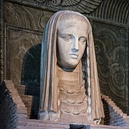

Sirius
O termo Sirius deriva do latim sīrius e do grego σείριος (seirios, "brilhante"). Sendo a principal estrela da constelação do Cão Maior, é muitas vezes apelidada de Estrela do Cão (Dog-Star, nos países anglófonos). Também é conhecida pelo nome latino Canicula (“cachorrinho”) e como الشعرى aš-ši’rā, em árabe, donde deriva o nome alternativo Ascherre.
História

Do ponto de vista histórico, Sírio sempre foi muito importante no céu noturno e fruto de um significado muito especial dado pelas mais diversas culturas. Recebeu cultos astrólatras sob a alcunha de Sótis no Vale do Nilo do antigo Egito, muito antes de Roma ter sido fundada. Diversos templos em sua honra foram erguidos de forma a permitir que a luz de Sírio penetrasse por um óculo até as aras internas. Crê-se que o calendário egípcio seria baseado na ascensão helíaca de Sírio, a qual ocorre um pouco antes das cheias anuais do rio Nilo e do solstício de verão.[carece de fontes] No mito grego, consta que os cães de caça de Órion teriam ascendido aos céus pelas mãos de Zeus, tomando a forma da estrela Sírio ou das duas constelações do Cão Maior e Cão Menor. Os antigos gregos também associavam Sírio ao calor do verão, apelidando-a de Σείριος (Seirios), que é geralmente traduzida como A Escaldante. Essas associações com o verão e o mormaço explicariam, por exemplo, a origem da expressão popular calor do cão. Na astrologia da Idade Média, Sírio era a estrela fixa de Behenia, associada ao berilo e ao junípero, com simbologia cabalística catalogada por Henrique Cornélio Agrippa.